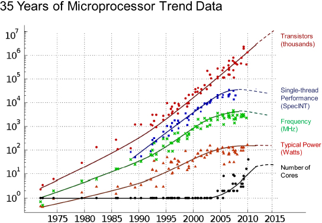

Introduction to

&

&
Why Functional Programming ?
The Challenge
- Moores law now achieved by increasing the number of cores.
- Huge workloads that requires horizontal scaling
- "PPP" Grand Challenge

Concurrency and Parallelism
Parallel Programming
Executes Programs faster on parallel hardware
Executes Programs faster on parallel hardware
Concurrent programming
Manage concurrent execution threads explicitly
Manage concurrent execution threads explicitly
The root of the problem
- non-determinism caused by concurrent threads accessing shared mutable state.
var x = 0
async { x = x+1 }
async { x = x*2 }
// Can give 0,1,2
- It helps to encapsulate state in actors or transactions, but the fundamental problem stays the same.
- non-determinism = parallel processing + mutable state
- To get a deterministic processing, avoid the mutable state!
- Avoiding mutable state means programming functionally.
Why Scala ?
Scala is a Unifier

Scala's ToolBox
Parallelism :
Collections
Parallel Collections
Distributed Collecctions
Distributed Collecctions
Concurrency :
Actors
Software Transactional memory
Futures
Software Transactional memory
Futures
Akka
Few Examples
A Class ...
Java :
public class Person {
public final String name;
public final int age;
Person(String name, int age) {
this.name = name;
this.age = age;
}
} Scala :
class Person(val name:String,val age:Int)
... and its usage
Java :
import java.util.ArrayList;
...
Person[] people;
Person[] minors;
Person[] adults;
{
ArrayList<Person> minorsList = new ArrayList<Person>();
ArrayList<Person> adultsList = new ArrayList<Person>();
for(int i = 0 ; i< people.length; i++)
(people[i].age < 18 ? minorsList:adultsList).add(people[i]);
minors = minorsList;
adults = adultsList;
}
Scala :
val people : Array[Person]
val (minor, adults) = people partion (_.age < 18)
Going Parallel
Java :
?
Scala :
val people : Array[Person]
val (minor, adults) = people.par partion (_.age < 18)